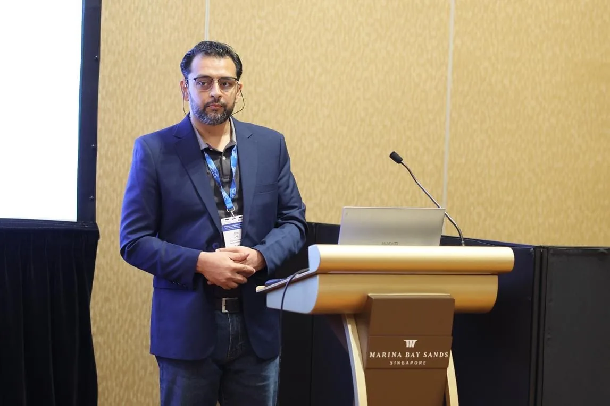

2018
Ph.D. in Information and Communication Engineering
Northwestern Polytechnical University, China
POSTDOCTORAL FELLOW · SENIOR MEMBER, IEEE
Postdoctoral Fellow at the Research Center for Communication Systems and Sensing (IRC-CSS), King Fahd University of Petroleum & Minerals (KFUPM), Saudi Arabia.

ABOUT ME
Dr. Afan Ali is a Postdoctoral Fellow at the Research Center for Communication Systems and Sensing (IRC-CSS), King Fahd University of Petroleum & Minerals (KFUPM), Saudi Arabia, and a Senior Member of IEEE.
His research focuses on next-generation wireless communications, particularly digital twins, agentic and generative AI, physical-layer signal processing, intelligent channel estimation, and beyond-5G/6G networks.
He has more than 15 years of experience across academia and industry, including visiting faculty service at Istanbul Medipol University, research leadership in Pakistan, and teaching at the Institute of Space Technology. His work bridges practical communication challenges and intelligent, data-driven system design.
EDUCATION
Northwestern Polytechnical University, China
Australian National University, Australia
FAST-NU, Pakistan
RESEARCH INTERESTS
Developing adaptive, trustworthy and intelligent wireless systems.
Physics-aware and data-driven digital representations for wireless monitoring, prediction and optimization.
Closed-loop autonomous decision-making and generative intelligence for proactive communication systems.
AI-enhanced channel estimation, signal processing, interference management and wireless sensing.
Open RAN, private networks and intelligent architectures for future wireless connectivity.
FEATURED RESEARCH
Research on drift-aware channel estimation, lifecycle management and adaptive model replacement.
GenAI-enhanced digital twins for proactive interference management in dense wireless environments.
Feedback-driven intelligence for mobility, communication control and adaptive wireless operation.
Exploring sensing and digital-twin intelligence for safety-focused applications in high-density environments.
SCHOLARLY WORK
Journal and conference publications in reverse chronological order. Dates reflect publication records where available; some older conference records have differing proceedings dates.
Afan Ali and Huseyin Arslan
View publication ↗Afan Ali, Abdelali Arous and Huseyin Arslan
View publication ↗Afan Ali, Md. Jalil Piran and Huseyin Arslan
View publication ↗Afan Ali
View publication ↗Shu Liu, Fan Yangyu, Zhe Guo, Ashok Samal and Afan Ali
View publication ↗Afan Ali, Fan Yangyu and Shu Liu
View publication ↗Afan Ali and Fan Yangyu
View publication ↗Afan Ali and Fan Yangyu
View publication ↗Afan Ali and Fan Yangyu
View publication ↗Afan Ali and Fan Yangyu
View publication ↗Afan Ali and Fan Yangyu
View publication ↗Afan Ali and Fan Yangyu
View publication ↗The following publicly available preprints are currently under review, as confirmed by the author. Under-review manuscripts are distinct from peer-reviewed publications.
Afan Ali, Ali Arshad Nasir and Daniel Benevides da Costa
View publication ↗Afan Ali, Ali Arshad Nasir, Naveed Iqbal and Daniel Benevides da Costa
View publication ↗Afan Ali, Ali Arshad Nasir and Daniel Benevides da Costa
View publication ↗EXPERIENCE
Research Center for Communication Systems and Sensing (IRC-CSS), KFUPM, Saudi Arabia
Istanbul Medipol University, Türkiye
Research and development organization, Pakistan
Institute of Space Technology, Pakistan
Professional recognition within the global electrical and electronics engineering community.
NEWS & ACADEMIC ACTIVITIES
Selected moments from international conferences and the KFUPM research community. Click any photograph to view it in full size.
Riyadh, Saudi Arabia · 6–7 October 2026
Participated in the 5th Annual Kingdom Digital Twin Summit, featuring research on the transition from reactive to predictive digital twins. The KFUPM session, “From Reactive to Predictive Digital Twins: How Generative AI Enables Proactive Decision-Making,” addressed generative scenario modeling and proactive wireless-network control.
Related event or LinkedIn update ↗KFUPM, Dhahran · 1 October 2026
Joined the launch of the Agentic AI @ KFUPM community, bringing together researchers and practitioners to explore autonomous AI applications across disciplines, including telecommunications and sensing.
Related event or LinkedIn update ↗Novotel Dhahran · 2026
Attended University Research Day, where research teams presented emerging technologies and application-oriented prototypes. The event brought together university researchers, industry representatives, and innovation stakeholders, including work from IRC-CSS.
Related event or LinkedIn update ↗Singapore · 2026
Presented “GenAI-Enhanced Digital Twins for Predictive Interference Management in Ultra-Dense Networks” at IEEE PIMRC 2026. The event offered opportunities to exchange research perspectives on 6G, generative AI, digital twins, and intelligent wireless communications.
Related event or LinkedIn update ↗CONTACT & COLLABORATION
Interested in research collaboration, academic opportunities, or next-generation wireless systems?
IRC-CSS · King Fahd University of Petroleum & Minerals · Saudi Arabia